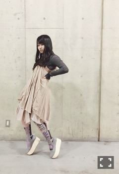
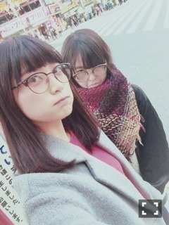

| 2016/02 02 Tue | できること。694回目 |

氷の上、松までも操るCAまりっか
三越宇宙支店、今日で終了でした。
おつかれさまです。
実は昨日おじゃましました！
いろいろ購入した！
KLOKAのアクセサリーもっと欲しいな。
握手会の服！

トップス kotohayokozawa
ワンピース unruly
タイツ BODYSONG.
靴 TOKYO BOPPER
このワンピース、お年玉で初めて
自分で選んで買ったお洋服です。
トップス、こちらの半袖も持っている。
14枚目選抜メンバーです！
3列目です。
立ち位置が変わらないからと言っても
気持ちが良い意味で変わり、
視野が広がってきています。
昨年選抜として一年過ごしていく中で
グループが大きくなっていっていることを
身を持って実感しました。
メンバーの活動量、世間の反応を見て、
自分はこのグループにいるんだったと
いちいちハッとすることが増えました。
気に留めず、自分も動かねば。
けど、のめり込むほど
今いる場所とほど遠くなります。
仕事に繋がるのはとっても嬉しいし、
望んでるし、グループとしての幅を広げる
チャンスなのですが、
逆にバランスが取れなくなって
自分が崩れてしまいます。
ライブで、握手会で、
直でファンのみなさんの声を聞いて、
あ、どの自分も好きって言ってくれる
人がいるんだ、がんばらなきゃと
スッと気持ちが戻ります。
しばらくはこうして、何度も何度も
声を聞いて奮い立つの繰り返しです。
どれだけの人に助けてもらってるか、、
うじうじ情けない！！！
選ばれるか選ばれないかで
まだ揺れてるのはわかるし、
そう思わせてるのは自分です。
どんなに選ばれてもそれは悔しいので
今年は期待を持って
任せてもらえるくらいになります。
そして、必ず形にしていきます。
見守っていてください。
責任を持って、3列目に務めます。
まいまいがセンター！
新たなセンターの曲、
どうなるかわくわくしてます。
まいまいにとってラストシングル。
最後まで笑顔で楽しんでほしい！

新年一発目のシングル、
盛り上げていくので
応援よろしくお願いします！
まりか
コメント(648)
2016/02/02 23:00